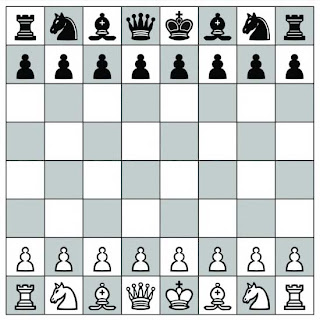
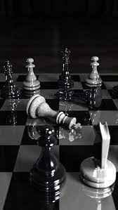
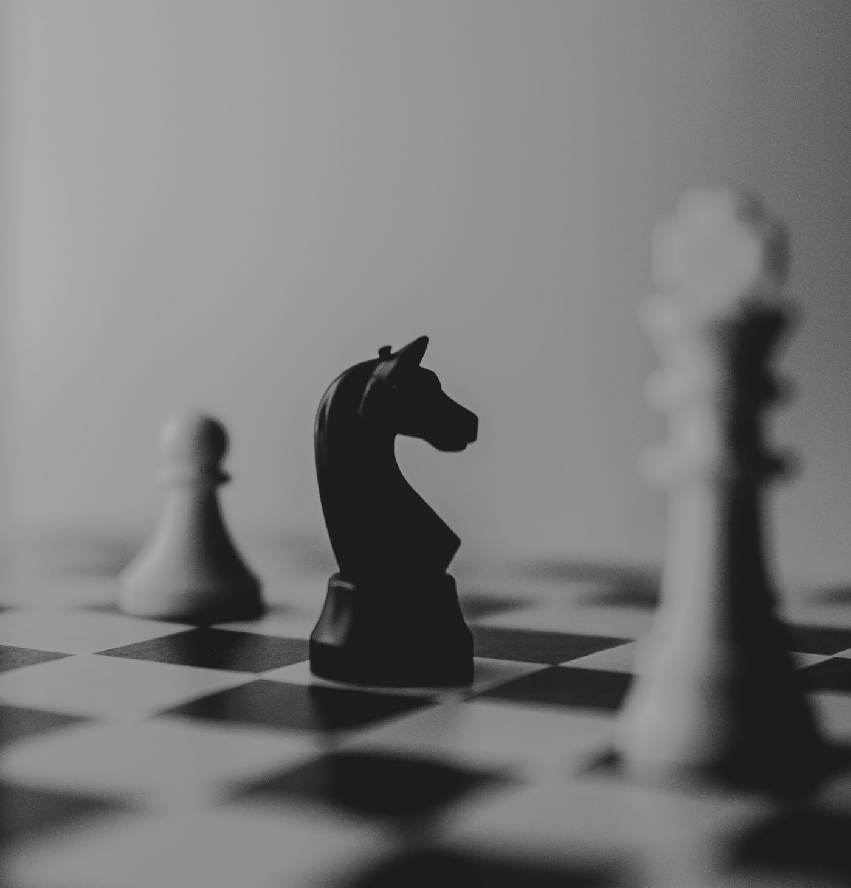
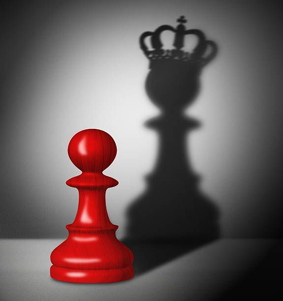
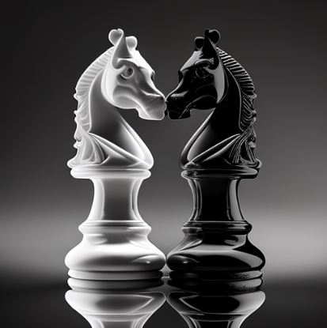

Chess
Chess is a strategic board game played between two opponents on an 8x8 grid called a chessboard. Each player begins with 16 pieces: one king, one queen, two rooks, two knights, two bishops, and eight pawns. The objective of the game is to checkmate the opponent's king, which means the king is placed under direct attack and has no legal move to escape. Chess combines strategy, tactics, and skill, and it has been a timeless and intellectually challenging game enjoyed by millions for centuries.

- Objective: The primary goal is to checkmate your opponent’s king.
- Setup: Each player starts with 16 pieces (1 king, 1 queen, 2 rooks, 2 knights, 2 bishops, 8 pawns) arranged on an 8x8 chessboard.
- Turns: Players take turns to move one piece at a time, starting with White.
- King: Moves one square in any direction. Can castle once per game if not in check.
- Queen: Moves any number of squares in any direction.
- Rook: Moves any number of squares horizontally or vertically.
- Bishop: Moves any number of squares diagonally.
- Knight: Moves in an L-shape: two squares in one direction and then one square perpendicular.
- Pawn: Moves one square forward (two squares on its first move). Captures diagonally. Can promote to any piece (except a king) upon reaching the opposite end.
- Check: When a king is under threat of capture.
- Checkmate: When a king is in check and cannot escape.
- Stalemate: When a player has no legal moves and their king is not in check, resulting in a draw.
- Castling: A special move involving the king and a rook. The king moves two squares towards a rook, and the rook moves to the square next to the king.
- En passant: A special pawn capture that can occur immediately after a pawn moves two squares forward from its starting position and lands beside an opponent's pawn.
- Draw: The game can end in a draw due to stalemate, threefold repetition, the fifty-move rule, or insufficient material to checkmate.





Know More